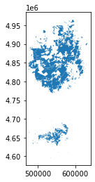

Collecting geopandas
Downloading geopandas-0.12.2-py3-none-any.whl (1.1 MB)
━━━━━━━━━━━━━━━━━━━━━━━━━━━━━━━━━━━━━━━━ 1.1/1.1 MB 13.4 MB/s eta 0:00:0000:0100:01
Requirement already satisfied: pandas>=1.0.0 in /Users/jungwoolee/opt/anaconda3/lib/python3.9/site-packages (from geopandas) (1.4.3)
Requirement already satisfied: packaging in /Users/jungwoolee/opt/anaconda3/lib/python3.9/site-packages (from geopandas) (21.3)
Collecting fiona>=1.8
Downloading Fiona-1.9.3-cp39-cp39-macosx_10_15_x86_64.whl (18.3 MB)
━━━━━━━━━━━━━━━━━━━━━━━━━━━━━━━━━━━━━━━━ 18.3/18.3 MB 22.0 MB/s eta 0:00:0000:0100:01
Collecting shapely>=1.7
Downloading shapely-2.0.1-cp39-cp39-macosx_10_9_x86_64.whl (1.4 MB)
━━━━━━━━━━━━━━━━━━━━━━━━━━━━━━━━━━━━━━━━ 1.4/1.4 MB 23.4 MB/s eta 0:00:00a 0:00:01
Collecting pyproj>=2.6.1.post1
Downloading pyproj-3.5.0-cp39-cp39-macosx_10_9_x86_64.whl (8.5 MB)
━━━━━━━━━━━━━━━━━━━━━━━━━━━━━━━━━━━━━━━━ 8.5/8.5 MB 23.0 MB/s eta 0:00:00a 0:00:01
Collecting munch>=2.3.2
Downloading munch-2.5.0-py2.py3-none-any.whl (10 kB)
Requirement already satisfied: importlib-metadata in /Users/jungwoolee/opt/anaconda3/lib/python3.9/site-packages (from fiona>=1.8->geopandas) (4.8.1)
Collecting cligj>=0.5
Downloading cligj-0.7.2-py3-none-any.whl (7.1 kB)
Requirement already satisfied: click~=8.0 in /Users/jungwoolee/opt/anaconda3/lib/python3.9/site-packages (from fiona>=1.8->geopandas) (8.0.3)
Collecting click-plugins>=1.0
Downloading click_plugins-1.1.1-py2.py3-none-any.whl (7.5 kB)
Requirement already satisfied: attrs>=19.2.0 in /Users/jungwoolee/opt/anaconda3/lib/python3.9/site-packages (from fiona>=1.8->geopandas) (21.2.0)
Requirement already satisfied: certifi in /Users/jungwoolee/opt/anaconda3/lib/python3.9/site-packages (from fiona>=1.8->geopandas) (2022.9.14)
Requirement already satisfied: python-dateutil>=2.8.1 in /Users/jungwoolee/opt/anaconda3/lib/python3.9/site-packages (from pandas>=1.0.0->geopandas) (2.8.2)
Requirement already satisfied: pytz>=2020.1 in /Users/jungwoolee/opt/anaconda3/lib/python3.9/site-packages (from pandas>=1.0.0->geopandas) (2021.3)
Requirement already satisfied: numpy>=1.18.5 in /Users/jungwoolee/opt/anaconda3/lib/python3.9/site-packages (from pandas>=1.0.0->geopandas) (1.20.3)
Requirement already satisfied: pyparsing!=3.0.5,>=2.0.2 in /Users/jungwoolee/opt/anaconda3/lib/python3.9/site-packages (from packaging->geopandas) (3.0.4)
Requirement already satisfied: six in /Users/jungwoolee/opt/anaconda3/lib/python3.9/site-packages (from munch>=2.3.2->fiona>=1.8->geopandas) (1.16.0)
Requirement already satisfied: zipp>=0.5 in /Users/jungwoolee/opt/anaconda3/lib/python3.9/site-packages (from importlib-metadata->fiona>=1.8->geopandas) (3.6.0)
Installing collected packages: shapely, pyproj, munch, cligj, click-plugins, fiona, geopandas
Successfully installed click-plugins-1.1.1 cligj-0.7.2 fiona-1.9.3 geopandas-0.12.2 munch-2.5.0 pyproj-3.5.0 shapely-2.0.1
[notice] A new release of pip available: 22.2.2 -> 23.1
[notice] To update, run: pip install --upgrade pip
Note: you may need to restart the kernel to use updated packages.
import geopandas as gpd
Shapefile, GeoJSON, KML 및 GPKG와 같은 다양한 지리 공간 파일 형식이 있습니다. 우리는 이 마이크로 코스에서 그들의 차이점에 대해 논의하지 않을 것이지만, 다음을 언급하는 것이 중요합니다.
Shapefile은 당신이 만나게 될 가장 일반적인 파일 유형이며,
이러한 모든 파일 유형은 gpd.read_file() 함수로 빠르게 로드할 수 있습니다.
다음 코드 셀은 뉴욕 주 환경 보존부의 관리 하에 있는 숲, 야생 지역 및 기타 토지에 대한 정보가 포함된 셰이프 파일을 로드합니다.
# Read in the datafull_data = gpd.read_file("/Users/jungwoolee/Downloads/archive/DEC_lands/DEC_lands/DEC_lands.shp")# View the first five rows of the datafull_data.head()
OBJECTID
CATEGORY
UNIT
FACILITY
CLASS
UMP
DESCRIPTIO
REGION
COUNTY
URL
SOURCE
UPDATE_
OFFICE
ACRES
LANDS_UID
GREENCERT
SHAPE_AREA
SHAPE_LEN
geometry
0
1
FOR PRES DET PAR
CFP
HANCOCK FP DETACHED PARCEL
WILD FOREST
NaN
DELAWARE COUNTY DETACHED PARCEL
4
DELAWARE
http://www.dec.ny.gov/
DELAWARE RPP
5/12
STAMFORD
738.620192
103
N
2.990365e+06
7927.662385
POLYGON ((486093.245 4635308.586, 486787.235 4...
1
2
FOR PRES DET PAR
CFP
HANCOCK FP DETACHED PARCEL
WILD FOREST
NaN
DELAWARE COUNTY DETACHED PARCEL
4
DELAWARE
http://www.dec.ny.gov/
DELAWARE RPP
5/12
STAMFORD
282.553140
1218
N
1.143940e+06
4776.375600
POLYGON ((491931.514 4637416.256, 491305.424 4...
2
3
FOR PRES DET PAR
CFP
HANCOCK FP DETACHED PARCEL
WILD FOREST
NaN
DELAWARE COUNTY DETACHED PARCEL
4
DELAWARE
http://www.dec.ny.gov/
DELAWARE RPP
5/12
STAMFORD
234.291262
1780
N
9.485476e+05
5783.070364
POLYGON ((486000.287 4635834.453, 485007.550 4...
3
4
FOR PRES DET PAR
CFP
GREENE COUNTY FP DETACHED PARCEL
WILD FOREST
NaN
NaN
4
GREENE
http://www.dec.ny.gov/
GREENE RPP
5/12
STAMFORD
450.106464
2060
N
1.822293e+06
7021.644833
POLYGON ((541716.775 4675243.268, 541217.579 4...
4
6
FOREST PRESERVE
AFP
SARANAC LAKES WILD FOREST
WILD FOREST
SARANAC LAKES
NaN
5
ESSEX
http://www.dec.ny.gov/lands/22593.html
DECRP, ESSEX RPP
12/96
RAY BROOK
69.702387
1517
N
2.821959e+05
2663.909932
POLYGON ((583896.043 4909643.187, 583891.200 4...
CLASS 열에서 볼 수 있듯이, 처음 다섯 행은 각각 다른 숲에 해당합니다.
이 튜토리얼의 나머지 부분에서는, 이 데이터를 사용하여 주말 캠핑 여행을 계획하고 싶은 시나리오를 고려해 보세요. 온라인에서 크라우드 소싱 리뷰에 의존하는 대신, 당신은 당신만의 지도를 만들기로 결정했습니다. 이렇게 하면, 당신은 당신의 특정한 관심사에 맞게 여행을 조정할 수 있습니다.
Prerequisites
데이터의 처음 다섯 행을 보기 위해, 우리는 head() 메소드를 사용했다. 당신은 이것이 또한 우리가 Pandas DataFrame을 미리 보는 데 사용하는 것이라는 것을 기억할 것입니다. 사실, DataFrame과 함께 사용할 수 있는 모든 명령은 데이터와 함께 작동합니다!
이것은 데이터가 (Pandas) DataFrame의 모든 기능을 가진 (GeoPandas) GeoDataFrame 객체에 로드되었기 때문입니다.
type(full_data)
geopandas.geodataframe.GeoDataFrame
예를 들어, 모든 열을 사용할 계획이 없다면, 그 중 일부의 하위 집합을 선택할 수 있습니다. (데이터를 선택하는 다른 방법을 검토하려면, 팬더 마이크로 코스에서 이 튜토리얼을 확인하세요.)
data = full_data.loc[:, ["CLASS", "COUNTY", "geometry"]].copy()
또한 loc(및 iloc)과 isin을 사용하여 데이터의 하위 집합을 선택할 수 있습니다. (이것을 검토하려면, 팬더 마이크로 코스에서 이 튜토리얼을 확인하세요.)
# Select lands that fall under the "WILD FOREST" or "WILDERNESS" categorywild_lands = data.loc[data.CLASS.isin(['WILD FOREST', 'WILDERNESS'])].copy()wild_lands.head()
CLASS
COUNTY
geometry
0
WILD FOREST
DELAWARE
POLYGON ((486093.245 4635308.586, 486787.235 4...
1
WILD FOREST
DELAWARE
POLYGON ((491931.514 4637416.256, 491305.424 4...
2
WILD FOREST
DELAWARE
POLYGON ((486000.287 4635834.453, 485007.550 4...
3
WILD FOREST
GREENE
POLYGON ((541716.775 4675243.268, 541217.579 4...
4
WILD FOREST
ESSEX
POLYGON ((583896.043 4909643.187, 583891.200 4...
위의 명령에 익숙하지 않다면, 참조를 위해 이 페이지를 북마크하는 것이 좋습니다. 필요에 따라 명령을 찾을 수 있습니다. (대안으로, 당신은 팬더 마이크로 코스를 수강할 수 있습니다.) 우리는 지도를 만들기 전에 데이터를 이해하고 필터링하기 위해 이 마이크로 코스 전반에 걸쳐 이러한 명령을 사용할 것입니다.
Create your first map!
우리는 plot() 메소드로 데이터를 빠르게 시각화할 수 있습니다.
wild_lands.plot()
<AxesSubplot:>

모든 GeoDataFrame에는 특별한 “기하학” 열이 포함되어 있습니다. 그것은 우리가 plot() 메소드를 호출할 때 표시되는 모든 기하학적 객체를 포함한다.
# View the first five entries in the "geometry" columnwild_lands.geometry.head()
우리 데이터 세트의 “기하학” 열에는 위의 플롯에서 각각 다른 모양에 해당하는 2983개의 다른 다각형 객체가 포함되어 있습니다.
아래 코드 셀에서, 우리는 캠프장 위치(포인트), 발길(라인스트링) 및 카운티 경계(폴리곤)를 포함하는 세 개의 지오데이터프레임을 더 만듭니다.
# Campsites in New York state (Point)POI_data = gpd.read_file("/Users/jungwoolee/Downloads/archive/DEC_pointsinterest/DEC_pointsinterest/Decptsofinterest.shp")campsites = POI_data.loc[POI_data.ASSET=='PRIMITIVE CAMPSITE'].copy()# Foot trails in New York state (LineString)roads_trails = gpd.read_file("/Users/jungwoolee/Downloads/archive/DEC_roadstrails/DEC_roadstrails/Decroadstrails.shp")trails = roads_trails.loc[roads_trails.ASSET=='FOOT TRAIL'].copy()# County boundaries in New York state (Polygon)counties = gpd.read_file("/Users/jungwoolee/Downloads/archive/NY_county_boundaries/NY_county_boundaries/NY_county_boundaries.shp")
다음으로, 우리는 네 개의 GeoDataFrames 모두에서 지도를 만듭니다.
Plot() 메서드는 모양을 사용자 정의하는 데 사용할 수 있는 여러 매개 변수를 (선택 사항) 입력합니다. 가장 중요한 것은, 도끼 값을 설정하면 모든 정보가 동일한 지도에 그려진다는 것이다.
# Define a base map with county boundariesax = counties.plot(figsize=(10,10), color='none', edgecolor='gainsboro', zorder=3)# Add wild lands, campsites, and foot trails to the base mapwild_lands.plot(color='lightgreen', ax=ax)campsites.plot(color='maroon', markersize=2, ax=ax)trails.plot(color='black', markersize=1, ax=ax)